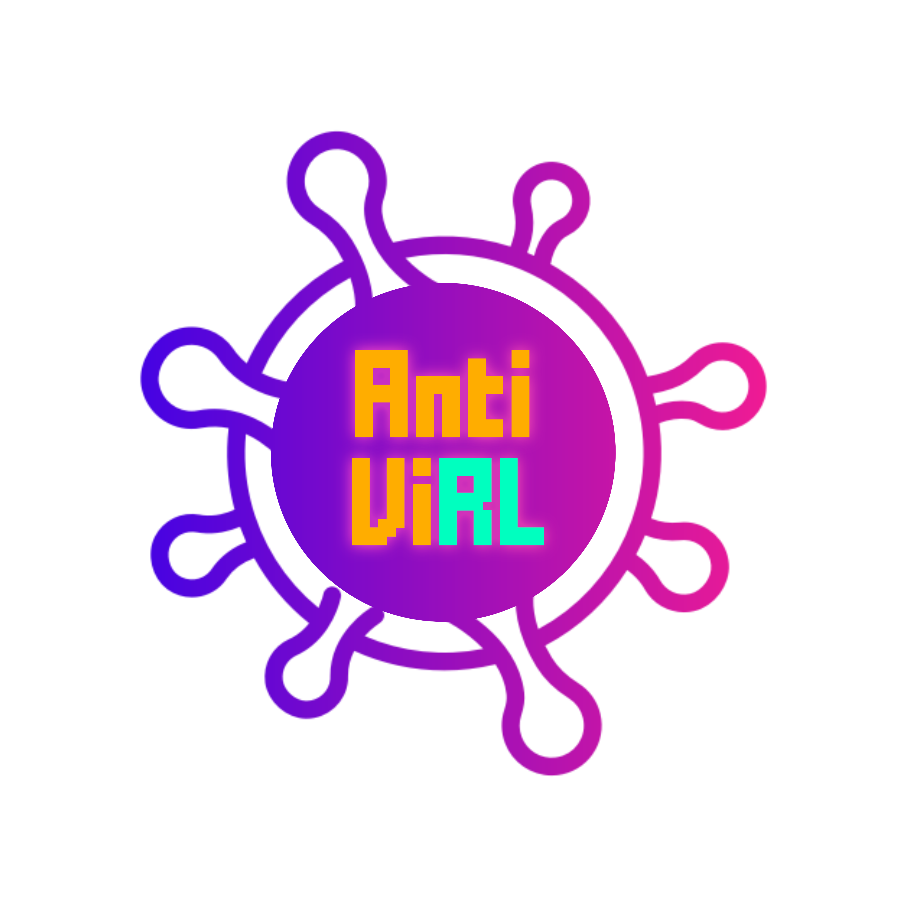

Covid-AR-Shooting-RL (Anti viRL)

This project is the 3rd place winner in the Covid-19 Gameathon organized by Angelhack.
This project was made in purpose for the Covid-19 Gameathon organized by Angelhack.
The repository contains both the PC and the android AR build.
The PC build can be found inside the Build folder.
The .apk file for the AR build can be found inside the Build_Android_APK.rar file which in turn is inside the Build_Android_APK folder.
The .apk file for the AR build can also be found in the github releases page related to the repository.
The Problem Statement
In an attempt to fight the virus, this hackathon calls upon developers to create innovative games that address issues faced by people during the pandemic. We are supposed to design a game that will help bring about awareness about the on going pandemic.
Solution
Our game takes the essentials of hygiene practices such as frequent sanitizing, social distancing, protecting oneself with a mask etc. into a fun and exciting PC and mobile FPS, surviving with the help of others (yes, it is a multiplayer through and through, without the support for others, the game will end a little too quick) and fending against the swarms of COVID virus cells and each other.
Game Concept
The game includes:
Pseudo 2nd person perspective gameplay
RL trained enemy virus cells that reduce health of player whilst in proximity
Photon API powered multiplayer features
Oh yeah, there is an AR version as well
Tech Stack